25
高级策略评估算法
在这一章中，我们将完成对强化学习 ( RL )世界的探索，将我们的注意力集中在可以用来解决困难问题的复杂算法上。RL的主题非常大，即使我们用一整本书来讨论它，我们也无法涵盖它的全部；相反，这一章是基于许多实际的例子，你可以用它们作为基础来处理更复杂的情况。
本章将讨论的主题有:
- TD( 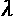)算法
- 演员兼评论家TD(0)
- 萨尔萨
- q学习，包括一个简单的视觉输入和一个神经网络
- 通过策略梯度进行直接策略搜索
我们现在可以开始分析TD(0)算法的自然扩展，这有助于考虑更长的转换序列，从而获得对价值函数的更准确的估计。
TD( 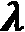)算法
在前一章中，我们介绍了时间差分策略，并且讨论了一个简单的例子TD(0)。在TD(0)的情况下，通过使用一步备份来近似计算折扣奖励。
因此，如果代理在状态stt中执行动作，并且观察到向状态sttT16】+1的转变，则近似变成如下:
如果任务是情节性的(如在许多现实生活场景中一样)，并且具有T(eT22】I)步骤，则情节eT26】I的完整备份如下:

当MDP过程达到吸收状态时，前面的表达式结束；因此，R t 是贴现奖励的实际值。TD(0)和这个选择之间的区别很明显:在第一种情况下，我们可以在每次转换后更新值函数，而对于完整的备份，我们需要等待剧集的结束。我们可以说，这种方法(它被称为蒙特卡罗，因为它是基于对整个序列的整体回报进行平均的思想)与TD(0)正好相反；因此，考虑基于k步备份的中间解决方案是合理的。
特别是，我们的目标是找到一种在线算法，一旦备份可用，就可以利用它们。让我们想象一系列的四个步骤。代理处于第一状态，并观察转换；此时，只有一步备份是可能的，为了提高收敛速度，更新值函数是一个好主意。第二次转换后，代理可以使用两步备份；但是，除了更新、更长的一步备份之外，它还可以考虑第一步备份。所以，我们有两个近似值:
前面哪个最靠谱？显然，第二个依赖于第一个(特别是当价值函数几乎稳定时)，以此类推，直到剧集结束。因此，最常见的策略是采用加权平均，为每个备份分配不同的重要性级别(假设最长的备份有 k 个步骤):
Watkins(在Watkins c . I . c . h .从延迟奖励中学习，剑桥大学博士论文，1989)证明了这种方法(有或没有平均)具有减少期望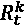相对于最优值函数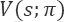的绝对误差的基本性质。事实上，他证明了以下不等式成立:
由于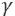有界在0和1之间，所以右边总是小于最大绝对误差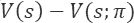，其中 V ( s )是一集期间的状态值。因此，如果策略被选择为相对于最优值函数而言是贪婪的，则k步备份(或不同备份的组合)的预期贴现回报会产生对最优值函数的更准确的估计。这并不奇怪，因为更长的备份包含更多的实际回报，但是当采用不同k步备份的平均值时，该定理的重要性在于其有效性。
换句话说，它为我们提供了直观方法实际收敛的数学证明，并且它还可以有效地提高收敛速度和最终精度。然而，管理k系数通常是有问题的，并且在许多情况下是无用的。TD( )背后的主要思想是采用单个因子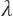，可以对其进行调整以满足特定要求。在一般情况下，理论分析(或萨顿和巴尔托所说的前瞻观点)是基于指数衰减的平均值。如果我们考虑一个有界在0和1(不含)之间的几何级数，我们得到:
因此，我们可以将无限备份的平均折现回报率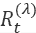视为:
在定义有限用例之前，理解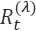是如何构建的是有帮助的。由于介于0和1之间，因子与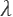成比例衰减，因此第一个备份的影响最大，所有后续备份对估计的影响越来越小。这意味着，一般来说，我们假设对Rtt的估计对即时备份更重要(即时备份变得越来越精确)，而我们利用更长的备份只是为了提高估计值。
现在，应该清楚的是，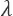 = 0相当于TD(0)(在前一章中讨论过)，因为只有一步备份保留在总和中(记住0 0 = 1)，而更大的值涉及所有剩余的备份。我们现在来考虑一集eT18】I其长度为T(eT24】I)。按照惯例，如果代理在T=T(eI)达到吸收状态，则所有剩余的 t + i 回报等于 R t (这很简单，因为所有可能的奖励都已经收集到了)；因此，我们可以截断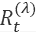:
前一个表达式的第一项涉及所有非终止状态，而第二项等于Rtt按比例减去第一个时间步长和最终状态之间的距离。同样，如果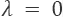，我们获得TD(0)，但我们现在也被授权考虑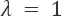(因为总和总是扩展到有限个元素)。当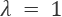时，我们获得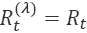，这意味着我们需要等到剧集结束才能获得实际的打折奖励。
如前所述，这种方法通常不是首选解决方案，因为当情节很长时，代理选择的动作的值函数在大多数情况下不是最新的。因此，TD( 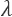)通常采用小于1的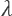值，以便获得在线更新的优势，以及基于新状态的校正。要在不看未来的情况下实现这个目标(我们希望一有新的信息就更新 V ( s )，我们需要引入资格痕迹 e ( s )(有时，在计算神经科学的上下文中， e ( s )也被称为刺激痕迹)。
状态 s 的合格跟踪是时间的函数，它返回特定状态的权重(大于0)。我们想象一个序列， s 1 ， s 2 ，…， s n ，考虑一个状态， s i 。在备份V(sT22】I)被更新后，代理继续其探索。什么时候sT26】I的新更新(考虑到更长的备份)很重要？如果 s i 不再被访问，那么更长的备份的影响一定是越来越小的， s i 据说不符合 V ( s )中的变更条件。这是先前假设的结果，即较短的备份通常具有较高的重要性。所以，如果 s i 是一个初始状态(或者紧接在初始状态之后)并且代理移动到其他状态，那么 s i 的效果一定会衰减。反之，如果重新审视sT50】I，则意味着之前对V(sT56】I的估计很可能是错误的，因此sT60】I有资格进行更改。
为了更好的理解这个概念，想象一个序列 s 1 ， s 2 ， s 1 ，…。很明显，当代理处于ss1以及ss2时，它无法选择正确的动作；因此，有必要重新评估 V ( s )直到代理能够前进。
最常见的策略(在萨顿R. S .，巴尔托A. G .，强化学习，麻省理工学院出版社，1998年也讨论过)是以递归方式定义合格轨迹。在每个时间步之后，et(s)以等于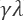的因子衰减(以满足前视的要求)；但当状态 s 被重新访问时，eT99】t(s)也加1 (  )。这样，每当我们想要强调它的影响时，我们就在趋势中强加一个跳跃。然而，由于 e ( s )独立于跳跃而衰减，因此稍后被访问和重新访问的状态比很快被重新访问的状态具有更低的影响。
)。这样，每当我们想要强调它的影响时，我们就在趋势中强加一个跳跃。然而，由于 e ( s )独立于跳跃而衰减，因此稍后被访问和重新访问的状态比很快被重新访问的状态具有更低的影响。
这样选择的原因非常直观:一个长序列之后被重新访问的状态的重要性明显低于一个几步之后被重新访问的状态的重要性。事实上，如果智能体在情节开始时在两个状态之间来回移动，对Rtt的估计显然是错误的，但当智能体在探索了其他区域后重新访问一个状态时，错误就变得不那么显著了。例如，策略可以允许初始阶段以达到部分目标，然后它可以强制代理返回以达到最终状态。
通过利用合格轨迹，TD( 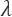)可以在更复杂的环境中实现非常快速的收敛，在单步TD方法和蒙特卡罗方法(通常避免使用)之间进行权衡。在这一点上，读者可能想知道我们是否对趋同有把握，幸运的是，答案是肯定的。达扬证明了(在达扬p .，TD()对于一般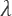 的收敛性，机器学习8，3–4/1992)TD(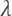)对于一个一般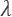收敛，只有几个特定的假设和基本条件，即政策是贪婪于极限与无限探索 ( GLIE )。这个证明非常技术性，超出了本书的范围；然而，最重要的假设(通常得到满足)是:
- 马尔可夫决策过程 ( MDP )具有吸收状态(换句话说，所有的情节都以有限步数结束)。
- 所有的转移概率都不为空(所有的状态都可以被访问无限次)。
第一个条件很明显。没有吸收态会产生无限的探索，这与TD方法不兼容(有时可能会过早结束一集，但这要么是不可接受的(在某些情况下)，要么是次优的选择(在许多其他情况下))。此外，萨顿和巴尔托(在前面提到的书中)证明了TD( 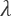)相当于采用贴现回报近似值的加权平均值，但没有展望未来的约束(这显然是不可能的)。
完整的TD(  )算法(可选择强制终止发作)为:
)算法(可选择强制终止发作)为:
- 设置初始确定性随机策略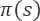。
- 设置初始值数组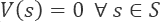。
- 设置初始合格跟踪数组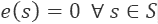。
- 设置第集第集第集第集。
- 设置每集的最大步数NT26】max。
- 设置一个常量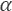(例如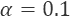)。
- 设置一个常量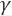(例如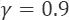)。
- 设置一个常量(例如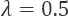)。
- 设置计数器 e = 0。
- 对于 i = 1到 N 集:
- 创建一个空状态列表 L 。
- 观察初始状态sI并将sT50】I追加到 L 。
- 而 s i 为非终结点e<Nmax:
- e = e + 1。
- 选择动作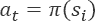。
- 观察转换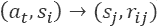。
- 将TD误差计算为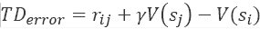。
- 递增合格痕迹e(sI)=e(sT81】I)+1。
- 对于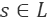:
- 更新数值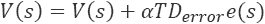。
- 更新资格跟踪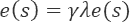。
- 设置sI=sj并将 s j 追加到 L 。
通过考虑TD误差及其反向传播，读者可以更好地理解该算法的逻辑。即使这只是一个比较，也可以将TD( 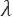)的行为想象成类似于用于训练神经网络的随机梯度下降 ( SGD )算法。
事实上，误差被传播到先前的状态(类似于MLP的较低层),并且与它们的重要性成比例地影响它们，重要性由它们的合格轨迹来定义。因此，具有较高合格轨迹的州可以被认为对错误负有更大的责任；因此，相应的值必须按比例修正。这不是一个正式的解释，但它可以简化对动力学的理解，而不会过度丧失严谨性。
TD( 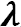)在更复杂的棋盘环境中
在这一点上，我们想用一个稍微复杂一点的棋盘环境来测试TD(  )算法——一个隧道环境，初始状态在一边，最终状态在另一边。
)算法——一个隧道环境，初始状态在一边，最终状态在另一边。
为了增加一点复杂性，除了吸收态，我们还会考虑一些中间的正态，可以把它们想象成检查点。代理应该学习从任何单元到最终状态的最佳路径，尝试通过尽可能多的检查点。让我们从定义新结构开始:
import numpy as np
width = 15
height = 5
y_final = width - 1
x_final = height - 1
y_wells = [0, 1, 3, 5, 5, 6, 7, 9, 10, 11, 12, 14]
x_wells = [3, 1, 2, 0, 4, 3, 1, 3, 1, 2, 4, 1]
y_prizes = [0, 3, 4, 6, 7, 8, 9, 12]
x_prizes = [2, 4, 3, 2, 1, 4, 0, 2]
standard_reward = -0.1
tunnel_rewards = np.ones(shape=(height, width)) * \
standard_reward
def init_tunnel_rewards():
for x_well, y_well in zip(x_wells, y_wells):
tunnel_rewards[x_well, y_well] = -5.0
for x_prize, y_prize in zip(x_prizes, y_prizes):
tunnel_rewards[x_prize, y_prize] = 1.0
tunnel_rewards[x_final, y_final] = 5.0
init_tunnel_rewards()
奖励结构如下图所示:
新隧道环境下的奖励机制
此时，我们可以开始初始化所有的常数(特别是，我们选择了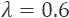，这是一个中间解决方案，可以保证接近蒙特卡罗方法的精度，而不会影响学习速度):
nb_actions = 4
max_steps = 1000
alpha = 0.25
lambd = 0.6
gamma = 0.95
tunnel_values = np.zeros(shape=(height, width))
eligibility_traces = np.zeros(shape=(height, width))
policy = np.random.randint(0, nb_actions,
size=(height, width)).\
astype(np.uint8)
在Python中，关键字lambda是保留的；我们使用截断的表达式lambd来声明常量。因为我们想从一个随机的单元格开始，我们需要重复上一章中介绍的相同过程；但是在这种情况下，我们还包括检查点状态:
xy_grid = np.meshgrid(np.arange(0, height),
np.arange(0, width),
sparse=False)
xy_grid = np.array(xy_grid).T.reshape(-1, 2)
xy_final = list(zip(x_wells, y_wells)) + \
list(zip(x_prizes, y_prizes))
xy_final.append([x_final, y_final])
xy_start = []
for x, y in xy_grid:
if (x, y) not in xy_final:
xy_start.append([x, y])
xy_start = np.array(xy_start)
def starting_point():
xy = np.squeeze(xy_start[
np.random.randint(
0, xy_start.shape[0],
size=1)])
return xy[0], xy[1]
我们现在可以定义episode()函数，它实现了一个完整的TD( )循环。由于我们不希望代理四处游荡，试图无数次地通过检查点，我们决定减少探索期间的奖励，以激励代理只通过必要的检查点，同时尽可能快地到达最终状态:
def is_final(x, y):
if (x, y) in zip(x_wells, y_wells) or \
(x, y) == (x_final, y_final):
return True
return False
def episode():
(i, j) = starting_point()
x = y = 0
e = 0
state_history = [(i, j)]
init_tunnel_rewards()
total_reward = 0.0
while e < max_steps:
e += 1
action = policy[i, j]
if action == 0:
if i == 0:
x = 0
else:
x = i - 1
y = j
elif action == 1:
if j == width - 1:
y = width - 1
else:
y = j + 1
x = i
elif action == 2:
if i == height - 1:
x = height - 1
else:
x = i + 1
y = j
else:
if j == 0:
y = 0
else:
y = j - 1
x = i
reward = tunnel_rewards[x, y]
total_reward += reward
td_error = reward + \
(gamma * tunnel_values[x, y]) - \
tunnel_values[i, j]
eligibility_traces[i, j] += 1.0
for sx, sy in state_history:
tunnel_values[sx, sy] += \
(alpha * td_error *
eligibility_traces[sx, sy])
eligibility_traces[sx, sy] *= \
(gamma * lambd)
if is_final(x, y):
break
else:
i = x
j = y
state_history.append([x, y])
tunnel_rewards[x_prizes, y_prizes] *= 0.85
return total_reward
还需要创建一个函数来执行策略选择:
def policy_selection():
for i in range(height):
for j in range(width):
if is_final(i, j):
continue
values = np.zeros(shape=(nb_actions,))
values[0] = (tunnel_rewards[i - 1, j] +
(gamma *
tunnel_values[i - 1, j])) \
if i > 0 else -np.inf
values[1] = (tunnel_rewards[i, j + 1] +
(gamma *
tunnel_values[i, j + 1])) \
if j < width - 1 else -np.inf
values[2] = (tunnel_rewards[i + 1, j] +
(gamma *
tunnel_values[i + 1, j])) \
if i < height - 1 else -np.inf
values[3] = (tunnel_rewards[i, j - 1] +
(gamma *
tunnel_values[i, j - 1])) \
if j > 0 else -np.inf
policy[i, j] = np.argmax(values).\
astype(np.uint8)
is_final()和policy_selection()功能与上一章定义的相同，无需解释。即使这不是真正必要的，我们已经决定在一些步骤后实施强制终止，相当于max_steps。这在开始时很有帮助，因为由于策略不是ε-贪婪的，代理可能会陷入一个永无止境的循环探索中。我们现在可以为固定数量的剧集训练模型(或者，当值数组不再变化时，可以停止该过程):
n_episodes = 5000
total_rewards = []
for _ in range(n_episodes):
e_reward = episode()
total_rewards.append(e_reward)
policy_selection()
episode()函数返回总奖励；因此，检查代理学习过程是如何发展的是有用的:
代理获得的总奖励
在开始的时候(大约500集)，代理人采用了一个不可接受的政策，产生了非常负面的总回报。然而，在不到1，000次迭代中，该算法达到了一个最佳策略，该策略仅在接下来的几集中略有改善。振荡是由于不同的起点；但是，总回报从来不是负的，随着检查点权重的衰减，这是一个积极的信号，表明代理达到了最终的积极状态。为了证实这一假设，我们可以绘制学习价值函数:
最终值矩阵
这些值与我们最初的分析是一致的；事实上，当单元格靠近检查点时，它们往往会更高，但同时，全局配置(考虑一个关于 V ( s )的贪婪策略)迫使代理达到其周围值最高的结束状态。最后一步是检查实际策略，特别关注检查点:
最终政策
可以观察到，代理试图通过检查点，但当它接近最终状态时，它(正确地)倾向于尽快结束这一集。我邀请读者使用常数的不同值重复实验，并改变检查点的环境动态。
如果他们的价值观保持不变会怎么样？有没有可能用更大的来完善政策？
重要的是要记住，由于我们广泛使用随机值，由于不同的初始条件，连续的实验会产生不同的结果。然而，当情节数量足够高时，该算法应该总是收敛到最优策略。
演员-评论家TD(0)在棋盘环境中
在这个例子中，我们想要使用一个叫做Actor-Critic的替代算法，以及TD(0)。在这种方法中，代理分为两个部分，一个是评论家，负责评估价值评估的质量，另一个是行动者，负责选择和执行动作。正如Dayan指出的(在Dayan P .，Abbott L. F .，理论神经科学，麻省理工学院出版社，2005年)，行动者-批评家方法的动态类似于交错的政策评估和政策改进步骤。事实上，评论家的知识是通过一个迭代过程获得的，其最初的评价通常是次优的。结构模式如下图所示:
演员-评论家图式
在这种特殊情况下，最好采用基于softmax函数的-贪婪软策略。该模型存储了一个称为策略重要性的矩阵(或近似函数)，其中每个条目pT6】I(s， a )是一个值，表示在某个状态下对特定动作的偏好。当指数变得非常大时，实际的随机策略是通过应用softmax和增加数值稳定性的简单技巧来获得的:
在执行状态sT16】I中的动作 a 并观察到状态sT20】j的转换以及奖励rT24】ij之后，评论家评估TD误差:
如果，转换被认为是正的，因为数值在增加。相反，当时，批评家将该行为评估为负面的，因为先前的值高于新的估计值。更一般的方法是基于优势的概念，优势的定义是:
通常，上一个表达式中的一项可以近似，因为我们通常没有足够的知识来计算，例如，每个状态下每个动作的效果。在我们的例子中，我们不能直接计算 Q 函数；因此，我们将其近似为术语。很明显，优势的作用类似于TD误差的作用(这是一个近似值)，并且必须表示确认在某个状态下的某个行为是好的还是坏的选择。对所有 优势优劣势(A3C)算法(换句话说，标准策略梯度算法的改进)的分析超出了本书的范围。然而，读者可以在舒尔曼j .、莫里茨p .、莱文s .、乔丹M. I .、阿贝耳p .、使用广义优势估计的高维连续控制、ICLR 2016中找到一些有用的信息。
当然，一个演员兼评论家的纠正是不够的。为了改进策略，有必要采用标准算法(例如TD(0)、TD( )或最小二乘回归，它们可以使用神经网络来实现)，以便学习正确的值函数 V ( s )。至于许多其他算法，这一过程只有在足够高的迭代次数后才能收敛，必须利用这些迭代多次访问状态，试验所有可能的动作。因此，对于TD(0)方法，评估TD误差后的第一步是使用上一章定义的规则更新 V ( s ):
第二步更务实；其实批评家的主要作用其实就是对每一个行为进行批判，决定在某个状态下什么时候增加或减少再次选择的概率比较好。这个目标可以通过简单地更新策略重要性来实现:
学习率的作用极其重要；事实上，不正确的值(换句话说，过高的值)可能会产生初始错误修正，从而影响收敛。重要的是不要忘记，价值函数在开始时几乎是完全未知的，因此批评家没有机会通过意识来增加正确的概率。
正因如此，我一直建议从一个很小的值(比如)开始，只有在算法收敛速度得到有效提升的情况下再增加。由于该策略基于softmax函数，因此在critic更新后，这些值将始终被重新规范化，从而产生实际的概率分布。在足够多的迭代之后，通过正确选择和，模型能够学习随机策略和价值函数。因此，通过总是选择具有最高概率的动作(对应于隐含的贪婪行为)，可以使用训练有素的代理:
现在让我们将这个算法应用于隧道环境。第一步是定义常数(因为我们正在寻找一个有远见的代理人，我们正在设置贴现因子):
import numpy as np tunnel_values = np.zeros(shape=(height, width)) gamma = 0.99 alpha = 0.25 rho = 0.001
此时，我们需要定义策略重要性数组，以及生成softmax策略的函数:
nb_actions = 4
policy_importances = np.zeros(
shape=(height, width, nb_actions))
def get_softmax_policy():
softmax_policy = policy_importances - \
np.amax(policy_importances,
axis=2, keepdims=True)
return np.exp(softmax_policy) / \
np.sum(np.exp(softmax_policy),
axis=2, keepdims=True)
实现单个训练步骤所需的函数非常简单，读者应该已经熟悉了它们的结构:
def select_action(epsilon, i, j):
if np.random.uniform(0.0, 1.0) < epsilon:
return np.random.randint(0, nb_actions)
policy = get_softmax_policy()
return np.argmax(policy[i, j])
def action_critic_episode(epsilon):
(i, j) = starting_point()
x = y = 0
e = 0
while e < max_steps:
e += 1
action = select_action(epsilon, i, j)
if action == 0:
if i == 0:
x = 0
else:
x = i - 1
y = j
elif action == 1:
if j == width - 1:
y = width - 1
else:
y = j + 1
x = i
elif action == 2:
if i == height - 1:
x = height - 1
else:
x = i + 1
y = j
else:
if j == 0:
y = 0
else:
y = j - 1
x = i
reward = tunnel_rewards[x, y]
td_error = reward + \
(gamma * tunnel_values[x, y]) - \
tunnel_values[i, j]
tunnel_values[i, j] += (alpha * td_error)
policy_importances[i, j, action] += \
(rho * td_error)
if is_final(x, y):
break
else:
i = x
j = y
此时，我们可以用50，000次迭代和30，000次探索性迭代(探索因子线性衰减)来训练模型:
n_episodes = 50000
n_exploration = 30000
for t in range(n_episodes):
epsilon = 0.0
if t <= n_exploration:
epsilon = 1.0 - (float(t) /
float(n_exploration))
action_critic_episode(epsilon)
产生的贪婪策略如下图所示:
最终贪婪政策
最终的贪婪策略与目标一致，代理人总是通过避开水井达到最终的积极状态。这种算法可能显得比必要的更复杂；然而，在复杂的情况下，它被证明是非常有效的。事实上，由于评论家的快速纠正，学习过程可以得到极大的改善。此外，作者已经注意到，相对于像SARSA或Q-Learning这样的算法，演员-评论家对错误的(或有噪声的)评估更鲁棒，这些算法可能遭受不稳定性，而不稳定性通过对优势项的估计而减少。
由于政策是单独学习的，所以 V ( s )的微小变化的影响不容易改变概率(特别是当一个行动通常比其他行动强得多时)。另一方面，如前所述，有必要避免过早收敛，以便让算法修改重要性/概率，而不需要过多的迭代次数。只有在对每个特定场景进行全面分析后，才能找到正确的权衡，不幸的是，没有适用于所有情况的通用规则。我的建议是测试各种配置，从小值开始(例如，一个的折扣因子)，评估相同探索期后实现的总回报。
复杂的深度学习模型(如异步A3C参见Mnih V .，Puigdomènech Badia A .，Mirza M .，Graves A .，Lillicrap T. P .，Harley T .，Silver D .，Kavukcuoglu K .，深度强化学习的异步方法，arXiv:1602.01783【cs .LG]了解更多信息)基于输出softmax策略(其动作通常与其概率成比例)和值的单个网络。
不采用显式的-贪婪软策略，可以向全局成本函数添加最大熵约束:
当所有动作具有相同的概率时，熵是最大的，这种约束(具有适当的权重)迫使算法增加探索概率，直到一个动作成为主导，并且不再需要避免贪婪的选择。这是采用自适应ε-贪婪策略的一种合理而简单的方法，因为当模型分别与每个状态一起工作时，不确定性非常低的状态会变得贪婪；只要有必要继续探索，就有可能自动保持高熵，以获得最大回报。
双重校正的效果与最大熵约束一起提高了模型的收敛速度，鼓励了初始迭代期间的探索，并产生了非常高的最终精度。我邀请读者用其他场景和算法实现这个变体。特别是，在本章的最后，我们将实验一种基于神经网络的算法。由于这个例子非常简单，我建议使用TensorFlow创建一个基于演员-评论家方法的小型网络(一个很好的起点是位于https://blog . tensor flow . org/2018/07/deep-reinforcement-learning-keras-eager-execution . html的文章)。读者可以采用一个均方误差 ( MSE )损失值和softmax交叉熵策略。一旦模型成功地与我们的玩具示例一起工作，就有可能开始处理更复杂的场景(就像在https://gym.openai.com的OpenAI体育馆提出的场景)。
SARSA算法
SARSA(名字来源于序列状态-动作-奖励-状态-动作)是TD(0)对Q函数估计的自然延伸。它的标准公式(有时称为单步SARSA，或SARSA(0)，原因与上一章解释的相同)基于单个下一个奖励rt+1，这是通过在状态 s t 中执行动作 a t 获得的。时间差计算基于以下更新规则:
该等式等价于TD(0)，并且如果策略被选择为GLIE，则已经证明(在Singh S .，Jaakkola T .，Littman M. L .，Szepesvári C .，单步策略强化学习算法的收敛结果，机器学习，39/2000)当所有对(状态，动作)经历无限次时，SARSA以概率1收敛到最优策略。这意味着，如果策略被更新为贪婪于由 Q 引起的当前值函数，则它认为:

同样的结果也适用于Q函数。特别是，证明所要求的最重要的条件是:
- 具有约束条件和的学习率。
- 奖励的方差必须是有限的。
当是状态和时间步长的函数时，第一个条件尤其重要；然而，在许多情况下，它是一个介于0和1之间的常数，因此称为。解决这个问题的一个常见方法(尤其是当需要大量迭代时)是让学习率在训练过程中衰减(换句话说，呈指数衰减)。相反，为了减轻非常大的奖励的影响，可以将它们限制在一个合适的范围内(例如，(-1，1))。
在许多情况下，没有必要采用这些策略，但在更复杂的情况下，为了确保算法的收敛，这些策略可能变得至关重要。此外，正如上一章所指出的，在开始稳定策略之前，这类算法需要一个漫长的探索阶段。最常见的策略是采用-贪婪策略，探索因子随时间衰减。在第一次迭代中，代理必须探索而不关心行为的回报。通过这种方式，可以在以纯粹的贪婪探索为特征的最终精炼阶段开始之前，基于 V ( s )的更精确的近似值来评估实际值。
完整的SARSA(0)算法(可选强制终止情节)为:
- 设置初始确定性随机策略。
- 设置初始值数组
 。
。 - 设置剧集数NT42集。
- 设置每集的最大步数 N max 。
- 设置一个常量(例如)。
- 设置一个常量(例如)。
- 设置一个初始探索因子(例如)。
- 定义一个策略，让探索因子衰减(线性或指数)。
- 设置计数器 e = 0。
- 对于 i = 1到 N 集:
- 观察初始状态sT15】I。
- 而sT19】I为非终结，eT102】T23】NT25】max:
- e = e + 1。
- 选择带有探索系数的动作。
- 观察转换。
- 选择带有探索系数的动作。
- 更新Q(st， a t 功能(如果 s j 是端子，设置Q(st+1， a t
- 设置sI=sT70】j。
资格追踪的概念也可以扩展到SARSA(和其他TD方法)；然而，这超出了本书的范围。感兴趣的读者可以在萨顿R. S .，巴尔托A. G .，强化学习，麻省理工学院出版社，1998中找到所有的算法(连同它们的数学公式)。
棋盘环境中的SARSA
我们现在可以在原始的隧道环境中测试SARSA算法(所有没有重新定义的元素都与前一章相同)。第一步是定义 Q ( s ， a )数组和训练过程中使用的常数:
import numpy as np nb_actions = 4 Q = np.zeros(shape=(height, width, nb_actions)) x_start = 0 y_start = 0 max_steps = 2000 alpha = 0.25
由于我们想要采用一个 -贪婪策略，我们可以将起点设置为(0，0)，迫使代理达到正的最终状态。我们现在可以定义执行培训步骤所需的功能:
-贪婪策略，我们可以将起点设置为(0，0)，迫使代理达到正的最终状态。我们现在可以定义执行培训步骤所需的功能:
def is_final(x, y):
if (x, y) in zip(x_wells, y_wells) or \
(x, y) == (x_final, y_final):
return True
return False
def select_action(epsilon, i, j):
if np.random.uniform(0.0, 1.0) < epsilon:
return np.random.randint(0, nb_actions)
return np.argmax(Q[i, j])
def sarsa_step(epsilon):
e = 0
i = x_start
j = y_start
while e < max_steps:
e += 1
action = select_action(epsilon, i, j)
if action == 0:
if i == 0:
x = 0
else:
x = i - 1
y = j
elif action == 1:
if j == width - 1:
y = width - 1
else:
y = j + 1
x = i
elif action == 2:
if i == height - 1:
x = height - 1
else:
x = i + 1
y = j
else:
if j == 0:
y = 0
else:
y = j - 1
x = i
action_n = select_action(epsilon, x, y)
reward = tunnel_rewards[x, y]
if is_final(x, y):
Q[i, j, action] += alpha * \
(reward -
Q[i, j, action])
break
else:
Q[i, j, action] += alpha * \
(reward +
(gamma *
Q[x, y, action_n]) -
Q[i, j, action])
i = x
j = y
select_action()函数被设计为选择一个概率为ε的随机动作，以及一个关于 Q ( s ， a )的概率为的贪婪动作。sarsa_step()函数很简单，执行一个完整的剧集更新 Q ( s ， a )(这就是为什么这是一个在线算法)。在这一点上，可以为20，000集训练模型(我邀请读者也测试更小的值以学习评估收敛速度)，并在前15，000集期间为采用线性衰减(当t > 15，000，被设置为等于0，以便采用纯粹的贪婪策略):
n_episodes = 20000
n_exploration = 15000
for t in range(n_episodes):
epsilon = 0.0
if t <= n_exploration:
epsilon = 1.0 - (float(t) /
float(n_exploration))
sarsa_step(epsilon)
像往常一样，让我们检查一下学习到的值(考虑到政策很贪婪，我们要出图):
最终值矩阵(如)
正如预期的那样，Q函数已经以一致的方式学习了，我们可以通过绘制结果策略来得到确认:
最终政策
策略与初始目标是一致的，代理人避免所有的负面吸收状态，总是试图向最终的正面状态移动。然而，有些路径似乎比预期的要长。作为一个练习，我邀请读者为更多的迭代重新训练模型，调整探索周期。而且，是否有可能通过增加(或减少)贴现因子 来改进模型？记住会导致代理人目光短浅，只考虑眼前的回报就能选择行动，而
来改进模型？记住会导致代理人目光短浅，只考虑眼前的回报就能选择行动，而 会迫使代理人考虑更多的未来回报。
会迫使代理人考虑更多的未来回报。
这个特殊的例子基于一个长环境，因为代理总是从(0，0)开始，并且必须到达最远点；因此，所有中间状态都不太重要，着眼于未来来选择最佳行动是有帮助的。使用随机启动肯定可以改善所有初始状态的策略，但研究不同的值如何影响决策是很有趣的；因此，我建议重复实验，以评估各种配置，并提高对TD算法中涉及的不同因素的认识。
Q-学习
该算法由沃特金斯(Watkins C.I.C.H .，从延迟奖励中学习，剑桥大学博士论文，1989年)提出，并在沃特金斯C.I.C.H .，技术笔记Q-Learning ，机器学习8，1992年)中进一步分析，作为SARSA的更有效替代方案。Q-learning的主要特点是TD更新规则相对于Q(st+1， a )函数是立即贪婪的(假设代理在状态 s 时执行动作aT22】t后收到奖励 r t
关键思想是将当前的Q(st， a t )值与代理处于后继状态时可达到的最大Q值进行比较。假设，前面的等式可以转化为一个TDT41】误差结构:
第一项是当前报酬，第二项是代理使用其当前知识理论上可以实现的贴现最大报酬，最后一项是Q函数的估计。由于策略必须灵活，因此可以通过避免由于选择与最终动作不相关的Q值而导致的错误估计来提高收敛速度。
相反，通过选择最大Q值(利用当前知识)，该算法将比SARSA更快地向最优解移动，而且，收敛性证明的限制性更小。
事实上，Watkins和Dayan(在上述论文中)证明了如果、学习率(在Q学习的情况下，必须总是小于1)对SARSA ( 和)施加了相同的约束，则估计的Q函数以概率1收敛到最优值:
如针对SARSA所讨论的，关于回报和学习率的条件可以分别通过采用限幅函数和时间衰减来管理。在几乎所有的深度Q学习应用中，这些都是保证收敛的极其重要的因素；因此，我邀请读者在训练过程不能收敛到一个可接受的解决方案时考虑它们。
完整的Q学习算法(具有可选的强制终止情节)是:
- 设置初始确定性随机策略
 。
。 - 设置初始值数组。
- 设置第集第集第集第集的数量。
- 设置每集的最大步数 N max 。
- 设置一个常量(例如)。
- 设置一个常量(例如)。
- 设置一个初始探索因子(例如)。
- 定义一个策略，让探索因子衰减(线性或指数)。
- 设置计数器 e = 0。
- 对于 i = 1到 N 集:
- 观察初始状态sT75】I。
- 而sT79】I为非终结，eeT91】T83】NT85】max:
- e = e + 1。
- 选择带有探索因子的动作。
- 观察转变。
- 选择带有探索系数的动作。
- 更新 Q ( s t ， a t 功能(如果 s j 是端子，设置Q(st+1， a t
- 设置sT38】I=sj。
棋盘环境中的Q-学习
让我们用Q学习算法重复前面的实验。由于所有的常数都是相同的(以及选择一个 -greedy策略和设置为(0，0)的起始点)，我们可以直接定义实现单集训练的函数:
import numpy as np
def q_step(epsilon):
e = 0
i = x_start
j = y_start
while e < max_steps:
e += 1
action = select_action(epsilon, i, j)
if action == 0:
if i == 0:
x = 0
else:
x = i - 1
y = j
elif action == 1:
if j == width - 1:
y = width - 1
else:
y = j + 1
x = i
elif action == 2:
if i == height - 1:
x = height - 1
else:
x = i + 1
y = j
else:
if j == 0:
y = 0
else:
y = j - 1
x = i
reward = tunnel_rewards[x, y]
if is_final(x, y):
Q[i, j, action] += alpha * \
(reward -
Q[i, j, action])
break
else:
Q[i, j, action] += alpha * \
(reward +
(gamma *
np.max(Q[x, y])) -
Q[i, j, action])
i = x
j = y
我们现在可以训练模型进行5，000次迭代，其中3，500次是探索性的:
n_episodes = 5000
n_exploration = 3500
for t in range(n_episodes):
epsilon = 0.0
if t <= n_exploration:
epsilon = 1.0 - (float(t) /
float(n_exploration))
q_step(epsilon)
结果值矩阵(如SARSA实验中所定义)为:
最终值矩阵
同样，学习到的Q函数(显然还有贪婪的 V ( s ))与初始目标是一致的(特别是，考虑到起始点被设置为(0，0))，并且所得到的策略可以立即确认这个结果:
最终政策
Q-learning的行为与SARSA没有太大的不同(即使收敛更快)，一些初始状态没有得到完美的管理。这是我们选择的结果；因此，我邀请读者使用随机开始重复练习，并比较Q-learning和SARSA的训练速度。
Q-学习用神经网络对策略建模
现在，我们想使用一个较小的棋盘环境和一个神经网络(使用TensorFlow/Keras)来测试Q-learning算法。与前面例子的主要区别是，现在，状态由当前配置的截图来表示；因此，模型必须学会如何将一个值与每个输入图像和动作相关联。这不是真正的深度Q学习(它基于深度卷积网络，需要比我们在本书中讨论的空间更复杂的环境)，但它显示了这样一个模型如何在向人类提供相同输入的情况下学习最佳策略。为了减少训练时间，我们考虑正方形棋盘环境，有四个负吸收状态和一个正最终状态:
import numpy as np
width = 5
height = 5
nb_actions = 4
y_final = width - 1
x_final = height - 1
y_wells = [0, 1, 3, 4]
x_wells = [3, 1, 2, 0]
standard_reward = -0.1
tunnel_rewards = np.ones(shape=(height, width)) * \
standard_reward
for x_well, y_well in zip(x_wells, y_wells):
tunnel_rewards[x_well, y_well] = -5.0
tunnel_rewards[x_final, y_final] = 5.0
下图显示了奖励的图形表示:
小棋盘环境中的奖励
由于我们希望为网络提供图形输入，因此需要定义一个函数来创建代表隧道的矩阵:
def reset_tunnel():
tunnel = np.zeros(shape=(height, width),
dtype=np.float32)
for x_well, y_well in \
zip(x_wells, y_wells):
tunnel[x_well, y_well] = -1.0
tunnel[x_final, y_final] = 0.5
return tunnel
reset_tunnel()函数将所有值设置为0，除了(标记为-1)和最终状态(由0.5定义)。代理的位置(用值1定义)由培训功能直接管理。此时，我们可以创建并编译我们的神经网络。由于问题不是很复杂，我们采用具有以下结构的MLP:
- 输入层
- 具有双曲正切激活的六个神经元的隐藏层
- 具有双曲正切激活的四个神经元的隐藏层
- 具有线性激活的nb_actions神经元的输出层(因为它们代表Q函数值):
import tensorflow as tf model = tf.keras.models.Sequential([ tf.keras.layers.Dense(6, input_dim=width * height, activation='tanh'), tf.keras.layers.Dense(4, activation='tanh'), tf.keras.layers.Dense(nb_actions, activation='linear') ]) optimizer = tf.keras.optimizers.Adam(0.01) model.compile(optimizer, loss='mse')
输入是一个扁平的数组，而输出是Q函数(每个动作对应的所有值)。使用RMSprop和MSE损失函数训练网络(我们的目标是减少实际值和预测值之间的MSE)。为了训练和查询网络，创建两个专用函数很有帮助:
def train(state, q_value):
model.train_on_batch(
np.expand_dims(state.flatten(), axis=0),
np.expand_dims(q_value, axis=0))
def get_Q_value(state):
return model.predict(
np.expand_dims(state.flatten(), axis=0))[0]
def select_action_neural_network(epsilon, state):
Q_value = get_Q_value(state)
if np.random.uniform(0.0, 1.0) < epsilon:
return Q_value, \
np.random.randint(0, nb_actions)
return Q_value, np.argmax(Q_value)
这些函数的行为很简单。对读者来说，唯一新的元素是使用了train_on_batch()方法。与fit()相反，该函数允许我们在给定一批输入输出对的情况下执行单个训练步骤(在我们的例子中，我们总是有单个对)。因为我们的目标是从每一个可能的单元格开始，找到到达最终状态的最佳路径，所以我们将采用随机开始:
xy_grid = np.meshgrid(np.arange(0, height),
np.arange(0, width), sparse=False)
xy_grid = np.array(xy_grid).T.reshape(-1, 2)
xy_final = list(zip(x_wells, y_wells))
xy_final.append([x_final, y_final])
xy_start = []
for x, y in xy_grid:
if (x, y) not in xy_final:
xy_start.append([x, y])
xy_start = np.array(xy_start)
def starting_point():
xy = np.squeeze(xy_start[
np.random.randint(0,
xy_start.shape[0],
size=1)])
return xy[0], xy[1]
现在，我们可以定义执行单个训练步骤所需的功能:
def is_final(x, y):
if (x, y) in zip(x_wells, y_wells) or \
(x, y) == (x_final, y_final):
return True
return False
def q_step_neural_network(epsilon, initial_state):
e = 0
total_reward = 0.0
(i, j) = starting_point()
prev_value = 0.0
tunnel = initial_state.copy()
tunnel[i, j] = 1.0
while e < max_steps:
e += 1
q_value, action = \
select_action_neural_network(epsilon, tunnel)
if action == 0:
if i == 0:
x = 0
else:
x = i - 1
y = j
elif action == 1:
if j == width - 1:
y = width - 1
else:
y = j + 1
x = i
elif action == 2:
if i == height - 1:
x = height - 1
else:
x = i + 1
y = j
else:
if j == 0:
y = 0
else:
y = j - 1
x = i
reward = tunnel_rewards[x, y]
total_reward += reward
tunnel_n = tunnel.copy()
tunnel_n[i, j] = prev_value
tunnel_n[x, y] = 1.0
prev_value = tunnel[x, y]
if is_final(x, y):
q_value[action] = reward
train(tunnel, q_value)
break
else:
q_value[action] = reward + \
(gamma *
np.max(
get_Q_value(tunnel_n)))
train(tunnel, q_value)
i = x
j = y
tunnel = tunnel_n.copy()
return total_reward
q_step_neural_network()函数非常类似于上一个例子中定义的函数。唯一的区别是视觉状态的管理。每次有转换时，值1.0(表示代理人)从旧位置移动到新位置，前一个单元格的值被重置为默认值(保存在prev_value变量中)。
另一个次要区别是没有,因为在SGD算法中已经有了一个学习率集，向模型中添加另一个参数没有意义。我们现在可以训练模型进行2000次迭代，其中1200次是探索性的:
n_episodes = 2000
n_exploration = 1200
total_rewards = []
for t in range(n_episodes):
tunnel = reset_tunnel()
epsilon = 0.0
if t <= n_exploration:
epsilon = 1.0 - (float(t) /
float(n_exploration))
t_reward= q_step_neural_network(epsilon, tunnel)
total_rewards.append(t_reward)
当训练过程结束时，我们可以分析总回报，以了解网络是否成功地学习了Q函数(粗线是使用Savitzky-Golay滤波器的平滑版本):
通过神经网络Q-学习算法获得的总报酬
很明显，该模型运行良好，因为在探索期结束后，总回报在1000集后变得稳定，只有因路径长度不同而产生的小振荡(然而，由于TensorFlow/Keras采用的内部随机状态，最终曲线可能会有所不同)。为了查看确认，让我们使用贪婪策略(相当于)为所有可能的初始状态生成轨迹:
trajectories = []
tunnels_c = []
for I, j in xy_start:
tunnel = reset_tunnel()
prev_value = 0.0
trajectory = [[I, j, -1]]
tunnel_c = tunnel.copy()
tunnel[i, j] = 1.0
tunnel_c[i, j] = 1.0
final = False
e = 0
while not final and e < max_steps:
e += 1
q_value = get_Q_value(tunnel)
action = np.argmax(q_value)
if action == 0:
if I == 0:
x = 0
else:
x = I – 1
y = j
elif action == 1:
if j == width – 1:
y = width – 1
else:
y = j + 1
x = i
elif action == 2:
if I == height – 1:
x = height – 1
else:
x = I + 1
y = j
else:
if j == 0:
y = 0
else:
y = j – 1
x = i
trajectory[e – 1][2] = action
trajectory.append([x, y, -1])
tunnel[I, j] = prev_value
prev_value = tunnel[x, y]
tunnel[x, y] = 1.0
tunnel_c[x, y] = 1.0
i = x
j = y
final = is_final(x, y)
trajectories.append(np.array(trajectory))
tunnels_c.append(tunnel_c)
trajectories = np.array(trajectories)
下图显示了12个随机轨迹:
使用贪婪策略生成的12条轨迹
代理总是遵循最优策略，独立于初始状态，并且永远不会在井中结束。即使这个例子相当简单，但向读者介绍深度Q-learning的概念还是很有帮助的(有关进一步的详细信息，读者可以查看介绍性论文，李y .，深度强化学习:概述，arXiv:1701.07274 [cs .LG])。一般情况下，环境可以是更复杂的游戏(像Atari或Sega)，可能的动作数量非常有限。此外，不可能采用随机开始，但跳过一些初始帧通常是一个好的做法，以避免对估计器的偏差。
显然，网络必须更复杂(涉及卷积以更好地学习几何相关性)，并且迭代次数必须非常大。
为了加快收敛速度，可以采用许多其他技巧和特定算法，但它们超出了本书的范围。但是一般的流程和它的逻辑几乎是一样的，也就不难理解为什么有些策略更可取，以及如何提高准确率了。作为练习，我邀请读者创造更复杂的环境，有或没有关卡和随机奖励。看到模型如何能够轻松地学习足够多的剧集的动态就不足为奇了。此外，正如演员-评论家部分所建议的，使用TensorFlow来实现这样的模型是一个好主意，可以将性能与Q-learning进行比较。
通过策略梯度进行直接策略搜索
我们要讨论的最后一种方法不使用代理来寻找最优策略，而是直接寻找它。在这种情况下，我们总是假设我们在一个随机的环境中工作，其中的转换不是完全确定的。例如，机器人可以将高概率分配给一个转换，但是为了增加鲁棒性，它还必须包括一个噪声项，该噪声项可以导致转换到不同的状态。因此，我们需要包含一个转移概率。
给定这个元素，我们可以评估整个序列(通常以最终状态结束)的总体概率:Sk=(S1， s 2 ，…， s k )。为此，我们需要定义一个参数化的策略；因此，ST19】k的概率可以表示为一个条件:。完整的表达式要求我们显式地将状态转换组件从策略中分离出来，并引入动作(这在前面的表达式中是隐含的):
这个术语代表了具有编码在参数集中的知识的代理能够经历这样一个序列的实际概率。在这一点上，我们可以通过考虑一般分布的预期贴现回报来轻松定义成本函数:
由于代理人必须使预期的未来报酬最大化，也必须最大化。当然，我们不能处理积分，因此，我们需要用样本均值来近似它:
在前面的公式中， N 是被评估序列的总数，但在实际中，很容易将其视为批量大小。事实上，我们的目标是使用随机梯度上升方法(比如RMSProp或Adam)来优化。不幸的是，并不能立即有所帮助，因为我们不知道。然而，我们可以执行一些简单的操作来计算梯度:
为了简化前面的表达式，我们需要记住:
因此，通过应用这个技巧，我们获得:
换句话说，我们用样本均值来逼近真实梯度，唯一的复杂性是梯度的计算。一旦我们计算出梯度，我们就可以更新参数向量:
这个问题可以直接使用前面的公式来解决，或者最好使用更复杂的优化算法，如Adam。当然，在实际实现中，重要的是要记住现在的目标是最大化；因此，对数的符号必须反转。一般来说，表达式是使用哑元交叉熵获得的，其中 p = 1:
所以用一个标准的深度学习框架，把最小化就够了。
开放健身中心的政策梯度示例
在这个例子中，我们想使用OpenAI Gym提供的一个简单问题来测试策略梯度算法(参见https://gym.openai.com/envs/CartPole-v0/，这里也提供了所有的安装说明)。
目标是找到一种最佳策略来平衡铰接在手推车上的杆(最初由巴尔托等人在巴尔托a .、萨顿r .、安德森c .中提出，类似神经元的自适应元件可以解决困难的学习控制问题，IEEE Transactions on Systems，Man and Cybernetics，1983)。小车可以在两个方向上移动，但是当它保持非常靠近中心(公制单位)并且杆保持在离垂直线15°的位置时，问题被认为已经解决。
有趣的是，这个问题已经研究了很长时间，因为它的物理公式非常复杂，因此直接对控制系统建模非常困难。相反，RL可以仅使用有限数量的实验来解决这种问题，使用可以容易参数化的策略，例如MLP。
CartPole-v0问题截图
第一步是初始化环境:
import gym
env = gym.make('CartPole-v0')
env.seed(1000)
状态是一个四维向量，包含以下信息:
- 推车的位置 x
- 杆的角度
- 小车的线速度(一阶导数
- 极点角速度(一阶导数
只有两种可能的动作({-1，1}或{0，1})表示在两个方向中的一个方向上匀速运动。该策略使用采用ReLU单元的神经网络来参数化，ReLU单元非常容易优化:
import tensorflow as tf
policy = tf.keras.models.Sequential([
tf.keras.layers.Dense(32,
activation='relu',
input_dim=4),
tf.keras.layers.Dense(32,
activation='relu'),
tf.keras.layers.Dense(2,
activation='relu')
])
optimizer = tf.keras.optimizers.Adam()
因为我们想要使用TensorFlow提供的更健壮的函数来计算交叉熵，所以输出不是直接的Softmax，而是两个ReLU神经元，它们可以完美地表示两个logits。优化器是Adam，具有默认的学习速率。因为我们需要在选择动作时计算梯度，所以我们创建了一个函数:
def policy_step(s, grads=False):
with tf.GradientTape() as tape:
actions = policy(s, training=True)
action = tf.random.categorical(
actions, 1)
action = tf.keras.utils.to_categorical(action, 2)
loss = tf.squeeze(
tf.nn.softmax_cross_entropy_with_logits(
action, actions))
if grads:
gradients = tape.gradient(
loss, policy.trainable_variables)
return np.argmax(action), gradients
return np.argmax(action)
如果参数grads设置为True，该函数计算并返回梯度；否则，它只返回已经选择的操作。该函数的结构非常简单:
- 使用当前状态评估策略。
- 使用基于概率向量的随机选择来选择动作( p 0 ， p 1 )(使用逻辑)。如果策略具有高熵值，，那么动作是完全随机的。这种行为鼓励探索。然而，当政策变得越来越稳定时，一个概率和，因此。在这种情况下，代理开始利用策略，执行进一步探索的机会非常有限。
- 如理论部分所述，使用数值稳定的交叉熵计算损失函数。
- 计算梯度。
为了执行梯度上升，还需要创建一个基于所有可训练变量的空向量和一个效用函数，以根据以下公式计算折扣奖励:
这两个函数的代码如下面的代码片段所示:
def create_gradients():
gradients = policy.trainable_variables
for i, g in enumerate(gradients):
gradients[i] = 0
return gradients
def discounted_rewards(r):
dr = []
da = 0.0
for t in range(len(r)-1, -1, -1):
da *= gamma
da += r[t]
dr.append(da)
return dr[::-1]
由于我们需要评估所有可能的子序列，折扣奖励的计算考虑了从 i = 1到 i = T 的所有起点，其中 T 是序列的长度。记住顺序总是颠倒的也很重要，因为元素被附加到列表的尾部；因此，最近的过渡是最后一个。
此时，我们可以使用开始训练循环，以赋予整个序列更多的重要性。当行为积极时，环境提供的奖励等于1.0，当行为消极时，环境提供的奖励等于0.0。因此，很难理解一个序列是否应该被认为是成功的。一个简单的技巧是，如果一集在自然长度(等于200步)之前结束，则惩罚最后一个动作。在我们的例子中，每个负的终端状态都有一个等于-5.0的奖励，但是这个值可以进一步调整，以便最大化收敛速度。
批量大小等于5，我们要执行2000集(当然，我邀请读者测试不同的值并观察结果):
nb_episodes = 2000
max_length = 200
batch_size = 5
gamma = 0.99
gradients = create_gradients()
global_rewards = []
for e in range(nb_episodes):
state = env.reset()
e_gradients = []
e_rewards = []
done = False
total_reward = 0.0
t = 0
while not done and t < max_length:
env.render()
state = np.reshape(state, (1, 4)).\
astype(np.float32)
action, grads = policy_step(state,
grads=True)
state, reward, done, _ = env.step(action)
total_reward += reward
e_rewards.append(
reward if not done else -5)
grads = np.array(grads)
e_gradients.append(grads)
t += 1
global_rewards.append(total_reward)
d_rewards = discounted_rewards(e_rewards)
for i, g in enumerate(e_gradients):
gradients += g * d_rewards[i]
if e > 1 and e % batch_size == 0:
optimizer.apply_gradients(
zip(gradients / batch_size,
policy.trainable_variables))
gradients = create_gradients()
print("Finished episode: {}. "
"Total reward: {:.2f}".
format(e + 1, total_reward))
env.close()
and the gradients are applied using the Adam optimizer. The plot with the rewards is shown in the following figure. The highlighted line is a smoothed version:
政策梯度报酬在CartPole-v0问题中的应用
正如我们所见，该算法非常快地达到了最高分(等于200)，但它一直在振荡(在1500集之后大幅变平)。这是这种方法的缺点。事实上，虽然估计是无偏的，但其方差通常相当大。有不同的方法可以缓解这个问题，但它们可能会恶化整体性能。例如，增加批量大小可以减少校正次数，并产生更稳定的策略。另一种方法可能是最好的方法，称为基线减法，包括使用稍微不同的成本函数:
术语 不会改变无偏性，但是可以选择它来最小化梯度的方差。然而，当使用小批量时，在每次更新之前必须重新计算该项，并且由于样本量小，其影响有限。因此，当策略已经达到良好的稳定性时，通常优选采用具有衰减学习率的优化算法来限制校正，并且在振荡较大的情况下，采用稍大数量的探索情节。作为练习，我邀请读者测试这些不同的方法，以了解更多关于这种方法的优点和缺点。
不会改变无偏性，但是可以选择它来最小化梯度的方差。然而，当使用小批量时，在每次更新之前必须重新计算该项，并且由于样本量小，其影响有限。因此，当策略已经达到良好的稳定性时，通常优选采用具有衰减学习率的优化算法来限制校正，并且在振荡较大的情况下，采用稍大数量的探索情节。作为练习，我邀请读者测试这些不同的方法，以了解更多关于这种方法的优点和缺点。
总结
在本章中，我们介绍了基于不同长度的平均备份的TD(0)的自然演变。该算法名为TD( )，功能极其强大，它保证了比TD(0)更快的收敛速度，只有很少的(非限制性)条件。我们还展示了如何用TD(0)实现行动者-批评家方法，以便了解随机策略和价值函数。
在后面的章节中，我们讨论了两种基于Q函数估计的方法:SARSA和Q学习。它们非常相似，但后者有一个贪婪的方法，其性能(特别是训练速度)导致它优于SARSA。Q学习算法是最新发展的最重要的模型之一。事实上，这是第一个采用深度卷积网络来解决复杂环境(如Atari游戏)的RL方法。出于这个原因，我们还展示了一个基于MLP的简单示例，它处理视觉输入并输出每个动作的Q值。此外，我们通过一个基于OpenAI Gym的例子介绍了直接策略搜索的概念，open ai Gym是一组免费的环境，可以在其中试验RL算法。
RL的世界极其迷人，每天都有数百名研究人员致力于改进算法，解决越来越复杂的问题。我邀请读者检查参考资料，以便找到有用的资源，可以利用这些资源来获得对模型及其发展的更深入的理解。而且我建议看一下Google DeepMind团队写的博文，他们是深度RL领域的先驱。我也建议搜索arXiv上免费提供的论文(例如Mnih V .、Kavakcuoglu K .、Silver D .、Graves A .、Antonoglou I、Wierstra D .、Riedmiller M .、用深度强化学习玩雅达利、arXiv:1312.5602 v1【cs .LG]或Mnih，v .，Kavukcuoglu，k .，Silver，d .等人通过深度强化学习实现的人级控制。自然518，529–533(2015))。
我很高兴以这个主题结束这本书，因为我相信RL可以提供新的强大的工具，这些工具将极大地改变我们的生活。
延伸阅读
- 萨顿R. S .，巴尔托A. G .，强化学习，麻省理工学院出版社，1998
- Watkins c . I . c . h .从延迟奖励中学习，剑桥大学博士论文，1989年
- Dayan P .，TD的收敛()对于一般 ，《机器学习》1992年第8期第3–4页
- Dayan P .、Abbott L. F .，理论神经科学，麻省理工学院出版社，2005年
- 舒尔曼j .，莫里茨p .，莱文s .，乔丹M. I .，阿贝耳p .，利用广义优势估计的高维连续控制，ICLR 2016
- Singh S .、Jaakkola T .、Littman M. L .、Szepesvári C .，单步策略强化学习算法的收敛结果，机器学习，39/2000
- Watkins c . I . c . h .从延迟奖励中学习，剑桥大学博士论文，1989年
- Watkins C.I.C.H .，Dayan P .，技术笔记Q-Learning ，机器学习8，1992
- 刘，邹，记忆回放在强化学习中的作用，深度学习原理方法研讨会，2017
- 李燕，深度强化学习:综述，arXiv:1701.07274【cs .LG]
- Mnih V，Kavakcuoglu K，Silver D，Graves A，Antonoglou I，Wierstra D，Riedmiller M .，玩深度强化学习的Atari】，arXiv:1312.5602 v1【cs .LG]
- Mnih V，Kavukcuoglu K，Silver D，Graves A，Antonoglou I，Wierstra D，Riedmiller M .，玩深度强化学习的atari】。arXiv预印本arXiv:1312.5602，2013年
- Mnih V .、Puigdomènech Badia A .、Mirza M .、Graves A .、Lillicrap T. P .、Harley T .、Silver D .、Kavukcuoglu K .、深度强化学习的异步方法、arXiv:1602.01783【cs .LG]
- 巴尔托·a .、萨顿·r .、安德森·c .，可以解决困难的学习控制问题的类神经元自适应元件，IEEE系统、人和控制论汇刊，1983年
- Mnih，v .，Kavukcuoglu，k .，Silver，d .等通过深度强化学习实现的人级控制。自然518，529–533(2015)
这本书花费了很多心血，我希望能够为读者提供一些关于重要的机器学习算法和应用的真正有用的见解。我完全理解某些主题的复杂性会使它们难以用简单易懂的方式来解释，如果有些观点不够清楚，我向读者道歉。然而，我希望已经给了一个非常小的贡献分散这些美妙的概念；通过参考书目，渴望了解更多的读者可以找到非常有用的资源和原始论文。在每一个当中，她都会找到其他的参照物，因为这个过程注定要持续很久。学习在变！学习还需要继续前进的能力，带走我们需要的东西，留下我们不再需要的东西。最后，我希望我所有的读者在数据科学领域有一个美好的职业生涯，并希望你们保持不断学习新思想和改进现有知识的渴望。路永远在前方；在人工智能的驱动下，带着奇迹在上面旅行！